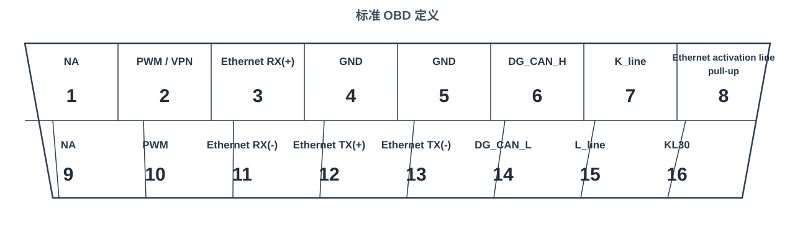

GBF
登录
首次安装模式
首次安装仅显示【在线登录】与【域账号登录】入口。
账号
密码
锁定规则：连续 5 次失败将锁定 10 分钟。无交互 1 小时自动退出。
状态与规则模拟
用于演示边界与错误提示
事件日志

GDTCfg.gn - 长城工程诊断工具
未连接
·
GDTCfg.gn
VIN：LGW12345678901234
仿真
总线数据
| 时间 | 信道 | 标识 | 名称 | 方向 | 长度 | 数据 |
|---|
图形监控
报文录制
Ready
报文回放
Ready
GBF转化
正在加载字段配置...
正在加载 .gbf 文件数据...
刷写配置
单件刷写
整车刷写
PDX校验
基础诊断
快捷诊断
OBD排放
| 数据项 (PID) | 参数值 | 单位 |
|---|
系统消息
待上传日志
| 类型 | 上传时间 | 失败原因 | 操作 |
|---|
在线更新
当前版本
xxxxxxxxxx
最新版本
---
准备更新...
请先点击【检查更新】获取更新内容。
帮助文档
快速入门
通过顶部快捷功能入口完成设备连接、保存工程与查看系统消息。
多窗口
窗口支持拖拽、缩放与置顶，便于并行查看状态与操作记录。
常见问题
- 设备打开失败请查看系统消息中的错误原因。
- 更新完成后需退出工具重新登录。
统一刷写设置
日志上传策略
单件刷写
日志上传方式
整车刷写
日志上传方式
当配置为"自动上传"时，执行页不再展示手动上传按钮。默认值为"手动上传日志"。
统一刷写数据版本
当前数据版本
V2.1.0
云端最新版本
--
点击“获取云端版本”后，最多展示 3 个可选版本；当所选版本与当前版本一致时，“立即更新”按钮不可点击。
文件存储路径
下载文件路径
日志文件路径
路径修改立即生效，影响 GBF 转化下载、单件刷写日志、整车刷写日志的默认存储位置。
单件刷写读取 DID 配置
| 序号 | DID 描述 | DID (HEX) | 操作 |
|---|
默认的前三项 DID 为系统固定配置，无法删除；点击“添加”可新增自定义读取项。
通讯设置
标准定义

运行参数
CAN 运行参数
标准配置
帧类型
11bit
标准波特率
500 kbps
采样点
Tq
时间量
预定标器
位定时段1
位定时段2
同步跳转宽度
以太网运行参数
物理层
100BASE-TX
诊断承载
DoIP
VLAN模式
VLAN ID
UDP发现端口
13400
TCP传输端口
13400
路由激活
必须执行 Routing Activation
OBD2 CAN 运行参数由 ISO 15765-4 标准变体驱动，并包含 CAN 数据链路层位时序参数；以太网区提供 VLAN 与 DoIP 连接前置参数，用于完整表达 Discovery → TCP → Routing Activation 流程。